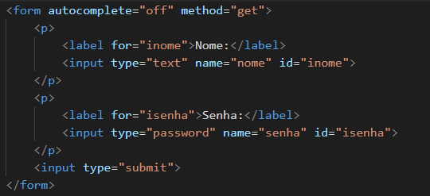
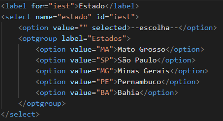
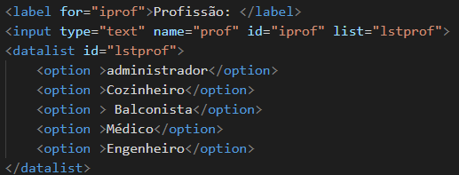
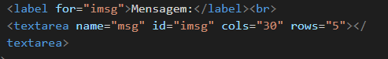
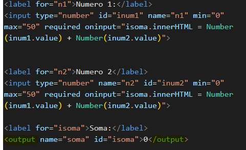

HTML5
Paragrafos e quebra de linha
É possivel criar um paragrafo for meio das tags <p>; e </p>
Para criar uma quebra de linha em um lugar específico ultiliza a tag <br>,
pronto! foi feita uma line break
Adição de símbolos especiais
Para adicinar simbulos, como os que estão abaixo é preciso saber o codigo de cada um deles, passe o mouse por cima dos simbulos para saber seu codigo
® © ™ € £ ¢ Δ ↖ ↑
adicionar Emojs:
entrar na https://emojipedia.org copiar o codigo do emoj e copiar o codigo do emoj, porém não copie o sinal de adição. Adicionar o essa escrita &#x antes do codigo
emojs: 🔥 💀
Adicionar fotos no site
Atraves de imagens internas na maquina
usar a tag <img> e encontrar o arquivo de imagem PNG ou JPEG e adicionar no src. O 'alt' serve como descrição da imagem


Imagem externa:

favicon.ico
Para adicionar um favicon no seu site escreva na head o comando <link>. Colocar a imagem.ico no 'href'
Formatação de textos
Negrito e Italico
Para colocar em negrito usar a tag <b>, como neste termo AQUI
para colocar em italico usar a tag <i> como neste termo, AQUI
Texto Marcado
Podemos colocar o texto marcado, com a tag <mark>.
Texto pequeno e Texto grande
Aqui temos um texto pequeno
aqui temos um texto grande
Usar a tag <small>; para texto pequeno
Usar a tag <bib> para um texto grande
Texto Deletado
Um texto deletado é representado DESSE JEITO
Usar a tag <del>
Texto inserido
Um texto inserido é representado DESSE JEITO
Usar a tag <ins> para apresentar um texto inserido
Texto sobrescrito
Para escrever textos comos este X10x 5
Usar a tag <sup> para fazer um texto sobrescrito
Texto Subscrito
Para textos como este, H2O
Usar a tag <sub> para fazer textos subscritos
Código fonte
O comando print('teste') pode ser escrito como codigo usando a tag <code>
Prétabulação
num = int(input('Digite um numero:'))
if num % 2 == 0:
print(f'O {num} é um numero impar')
else:
print(f'O {num} é um numero par')
print('Fim do programa')
Usar a tag <pre> para a tabulação ser mantida
Citações simples
Como dizia minha mãe: Na volta a gente compra
Usar a tag <q> para fazer citações simples, com aspas
Citações completas
A sitação de de Mark Ruffalo diz que:
As alterações climáticas são a maior ameaça à nossa existência nesta
é a curta história do nosso planeta, ninguém vai fugir das suas consequências.
Usar a tag <blockquote> para criar uma citação em bloco
Abreviações
Passe o mouse por cima das abreviações SP e RJ, só é possivel ver o siginificado das abreviações graças a Tag <abbr>
Listas
Listas ordenadas
- Acordar
- tomar banho
- escovar os dentes
- tomar cafe da manha
- Tag Ol para identificar ordem
- Tag LI dentro da OL para ordenar
Usar a tag <ol> para criar uma lista ordenada
Listas não ordenadas
- Pão
- Café
- Mandioca
- Tag UL para lista não ordenada
Usar a tag <ul> para criar uma lista não ordenada
Listas de definição
- Termo
- Descrição
- Tag Dl
- Serve para abrir a lista de termo de definiçao.
- Tag Dt
- Serve para classificar a parte do termo.
- Tag DD
- Serve para classificar a parte da descrição.
Usar a tag <dt> para criar uma lista de definição.
Trabalhando com Links
Links Externos
Link do repositorio github, clique aqui
Para criar um link no seu site use a Tag <a> e preencha o href com o link desejado. O uso do target="_blank" e o rel="external" faz com que o link seja aberto em uma nova aba.
Usando links internos
Link interno para o head ir para a pagina do head
Usar a Tag <a> para ir a um link interno, apertar ctrl + espaço para achar o outro arquivo, que deve
estar na
mesma pasta.
Links para donwload
Usar a Tag <a> e colocar como href o caminho de aquivo usando o ctrl + espaço, depois escrever download nome do arquivo, também adicionar um type= "application/zip" ou application/alguma para cada tipo de arquivo. site para o type de cada tipo de arquivo
Midia em HTML5
Imagens dinamicas
Diminua ou aumente o zoom do seu computador ou use o site em diferentes dispositivos
Para criar imagens dinamicas, use a tag <picture>, coloque a tag <img> e acima dessa imagem base, adicione a tag <source> colocando o maximo de largura que cada imagem pode ter com o elemento max-width, dependendo da largura da tela, a imagem vai mudar para , grande, media ou pequena.
Reproduzindo audios
Usar a tag <audio> para adiconar um audio no seu site.
Reproduzindo videos em hospedagem propria
Usar a tag <video> para adicionar videos ao seu site.
Usar a tag <source> para adaptar o tipo de arquivo que cada navegador aceita
Colocar no Type o tipo de arquivo que esta o seu video, podendo ser eles, arquivos: mkv, webm, mp4
Videos em hospedagem externa do YouTube
Ir no YouTube e achar um video que você possa ter os direitos autorais, clicar em compartilhar e incorporar e copiar o codigo e colar no seu proprio codigo htlm
Formulários
Primeiros passos
Para criar um formulario é preciso usar a tag <form> e o comando input:text e também uma tag <label> fazendo com que o id dessa label seja o mesmo id que o do input.

Tambem foi usado o autocomplete= "off" que faz com que o texto nao se auto complete nas caixas de input.
O metodo GET faz com que apareça os dados do que foi escrto no formulario na Url do site, mais recomendado para conteúdos que não são sensiveis.
O metodo POST faz com que não apareça os dados na Url, mais recomendado para conteudos sensiveis.
O comando action: "[local que vai ser direconado]" faz com que aqueles dados preenchdos sejam direconados para algum lugar.
O comando required faz com que o input aonde foi colocado o comando, seja obrigatorio. Também é possivel colocar o maximo e o minimo de letras que o formulario deve ter com os comandos maxlenght e minlength.
O uso do comando placeholder é muito importante também para colocar mensagens dentro da caixa de texto, como no exemplo acima
Tipos de input
Os tipos usados no comando input type="" podem ser diversos como:
Usando select e datalist
O select é um elemento parecido como input, porem ele cria uma área para selecionar um objeto. como no exemplo:
Esse select foi feito com o comando <select> junto do elemento <option> que cria uma opção junto do <optgroup> que cria grupo de opções, nele é possivel usar um <label>, para nomear um grupo
O datalist é usado para a mesma coisa so select, porém no datalist é possivel escrever a sua escolha, tirando as que ja estão disponiveis, como no exemplo:
O formulario é feito com o elemento <datalist>, junto com um <input:text> que ira criar uma caixa de texto aonde poderá escrever, no input colocar o atributo list para fazer com que se crie uma lista nesse input, e adicionar o elemento <datalist> com as suas <option>. não esqueça dos ids.
Textarea
O elemento textarea cria uma área de texto para o úsuario digitar uma mensagem.
Essa área de texto foi criada com o comando <textarea> aonde o programador pode escolher o numero de linhas e colunas
Usando output
Os autputs são usados para tirar o mostrar algo na tela do cliente, algo que ele escreveu, cono uma soma.
Esse output foi criado para somar esses dois numeros, isso é possivel por que foi feito um id em cada número, e somados dentro de um output, isso foi possivel graças a programação em JavaScript
